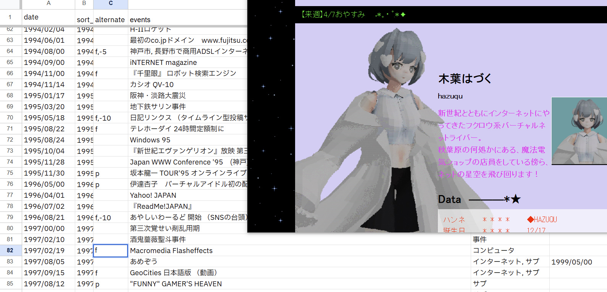
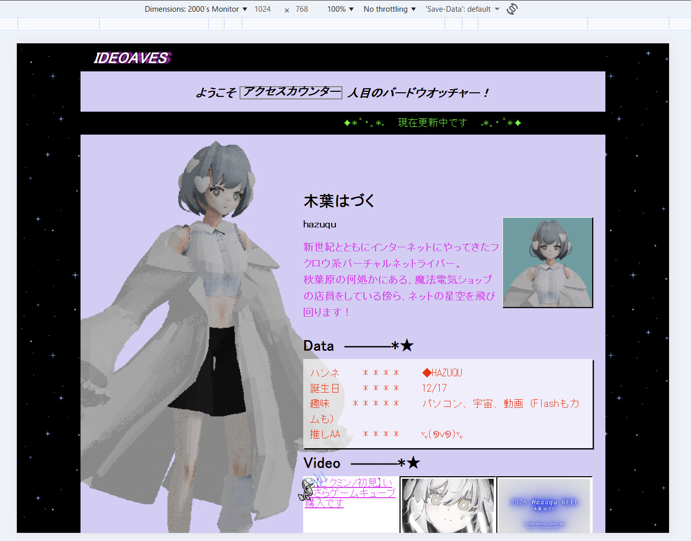

私のした26年エイプリルフールの解説
hazuqu

目的
例年エイプリルフールには名前がVTuberすぎるためにVTuber活動をしているのですが、昨今個人サイトの数が増えてきた肌感があり、その発展形の一つとして『00年代歴史改変IFのSF』を試すことにしました。
そうこうしているうちに31日を迎えてしまい、Webサイト構築、歴史考証、撮影、ブログ執筆までを1日で終えることになってしまいました。
特に歴史考証についてはツメが甘かったためもっとしっかりやりたいです。
例えば、あなたのやろうとしているWebcoreの作品を歴史的に確固たるものにする仕事、とか。
調査と歴史改変
個人サイトについて
まず個人サイトについて技術的、美学的な方面の知識のみだったため、森ではなく木を見ることにしました。多く参考になったのは佐倉葉ウェブ文化研究室で、ここをハブにはみ出した文化圏について枝葉を伸ばします。
個人サイトの変遷上いくつか見た目の変わる時期はあって、現代のWebcoreではそれらを一絡げにしてしまい、Geositiesのコラージュ的な消費に終始しているなと改めて感じました。
90-00年代史
また、歴史改変についてはスプレッドシートに年表を埋めてから、改変可能な箇所の年号にマイナスを入れていく方法を取りました。改変可能とは、商業的な失敗や政治、行政といった人の行動如何で容易に解決できるポイントを指します。
前述した佐倉葉ウェブ文化研究室の作業報告書、インターネット歴史年表 - JPNIC、関係情報：情報通信関連：情報通信白書なども参考にしました。
改変の中身
まずはゴールとしてVNI(バーチャルネットアイドル)が現代のVtuberのようにアバターを身にまとい、可能ならトラッキングしつつ映像をインターネットで生配信できる歴史だったら、とします。ただ90年代中期には既にモーショントラッキングやライブ配信は行われているので、回線速度がほんの少しよければうまくいくんですよね。
そこでターニングポイントとして1994年8月の商用ADSL接続を県規模にすることにしました。神戸だけでなくあちこちでその有用性を期待されたという体です。
（この世界ではみんなインターネットにちょっと易しいので、光ファイバー敷設もちょっと速くできています）
その後は掲示板をSNS、個人サイトをYoutuber、VNIをVtuberにシフトさせます。
この世界ではSNSの登場が早いのでコテハン＝アカウント名に近い状態ですね。@ユーザー名やハッシュタグが無い状態です。
またiモードの改変していないので、アスキーアートがまだ絵文字の主流ですという書き方は変ですが。これらはサイト再現の際に具体的に登場します。
サイト作成

1024 x 768 のサイズを基準に作っている
まずサイトに乗せる画像を作るためBlenderで既存の私のモデルをレンダリングします。サンプル数は軒並み1にしています。
この段階で1日になっていたのでサイトはAIが3割ほど書いています。
素材はblinkies.cafe及びGlitter-Graphics.com等を利用しています。
当時のhtml構造、CSSを反映すべきなのですが、過剰な時代錯誤を避けるのみで実装しています。
ブログ
99年末に人知れず活動していたVNLを探るを書き、この作品の外箱を作ります。もともとモキュメンタリーもやっておこうと考えていましたが動画撮影の時間がなかったため、消された動画の紹介という体で静止画を数枚用意する方法に変更しました。
撮影はスチルカメラではなくビデオ用のカメラで、また一度mp4として出した後、ほのかに残ったブロックノイズごとスクショします。
 ブログに登場するTwitter、年表のサイト、発見した個人サイトは自作のものです。
ブログに登場するTwitter、年表のサイト、発見した個人サイトは自作のものです。年表のサイトはideoavesでやっている横断年表のフォーマットを用いています。
Twitterは以前作ったTwitter風に出力できるjsを流用しています。
Wayback Machineは実際のサイトにリンクを打ち込んで当然出ないのでそのまま撮影しました。
アーカイブを見つけ出す部分はファンタジーです。爪が甘いです。
Aさんが設計の仕事をしていることと、持っているノベルティペンから、ファンタジーであることの説明はできています。
要注意団体-JP, http://ja.scp-wiki.net/groups-of-interest-jp
如月工務店, http://ja.scp-wiki.net/2th-goi-contest-hub5, ロゴ:rkondo_001
如月工務店, http://ja.scp-wiki.net/2th-goi-contest-hub5, ロゴ:rkondo_001
まとめ
というわけで、エイプリルフールでした～～～～。VNL(バーチャルネットライバー）は嘘ですが、現代に見るならVNIの方々のサイトでほとんど需要を満たせるので、是非漁ってみてください。
サイトの最下部、「2001 Hazuqu. All Right, Even if This is a Lie.」にしたんですが、まだもっと良い英文があったと思っています。良いのがあったら教えてください。
♥
⤴